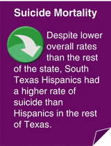

Injury is a significant public health problem in the USA, causing disability and premature death regardless of race, sex, or economic status and creating a tremendous burden on our national health care system [1]. Injury is the leading cause of both disability and death in American children and young adults and is the fifth-leading cause of death overall in the USA [1, 2]. An estimated 182,479 individuals in the USA died from injuries in 2007 [1]. In 2007, more than 29 million people were treated for injuries in hospital emergency departments in America, and 2.8 million of these injuries were so severe that they required hospitalization [1]. Even though there are many types of injuries that contribute to injury mortality, three of the leading causes of death by injury in the USA are motor vehicle crashes, suicide, and homicide [1]. Mortality due to injuries is presented as age-adjusted rates.
Motor Vehicle Crash Mortality
A motor vehicle crash (MVC) is any collision involving one or more ground-transportation motor vehicles. MVCs are the leading cause of injury death in the USA and are the leading cause of death overall among persons aged 5–34 [1, 2]. MVCs accounted for more than 33,800 US deaths in 2009 [3]. It is estimated that an additional 2.3 million persons suffer from nonfatal injuries associated with MVCs each year [3, 4].
Nationwide, men have a higher MVC mortality rate than women [5]. The risk of MVC mortality is higher among teen drivers (aged 16–19) and drivers aged 80 and older than among the other age groups in the USA [6]. In 2009, MVC mortality rates were 12.1 per 100,000 population for non-Hispanic whites, 10.4/100,000 for Hispanics, and 12.0/100,000 for African-Americans in the USA [7]. Other risk factors for motor vehicle-related fatalities include alcohol or other drug use and not wearing a seat belt [6]. In 2009, nearly one-third of all MVC-related fatalities occurring in the USA involved alcohol [8].
Motor Vehicle Crash Mortality in South Texas
Overall, South Texas had a lower age-adjusted motor vehicle crash mortality rate (13.5/100,000) than the rest of Texas (16.0/100,000) in 2005–2009. Although non-Hispanic whites in South Texas had a lower MVC mortality rate compared with non-Hispanic whites in the rest of Texas, rates were similar between Hispanics in South Texas and Hispanics in the rest of Texas (Fig. 10.1).
Fig. 10.1
Motor vehicle crash (MVC) mortality rates by location and race/ethnicity, 2005–2009. Source: Center for Health Statistics Data Management Team, Texas Department of State Health Services
The highest MVC mortality rates in South Texas were observed among individuals aged 15–24 (20.7/100,000) and those aged 75 and older (20.9/100,000). The MVC mortality rate for South Texas males (19.4/100,000) was 2.5 times higher than the mortality rate for females (7.9/100,000). Residents of nonmetropolitan counties in South Texas had a higher MVC mortality rate (19.6/100,000) than did residents of metropolitan counties (12.6/100,000). Mortality rates in Bexar County (12.5/100,000), Webb County (12.1/100,000), and the Lower Rio Grande Valley area (12.2/100,000) were not significantly different than the MVC mortality rate in South Texas as a whole (13.5/100,000).
Homicide Mortality
The International Classification of Diseases, 10th Revision, defines homicide as any intentional injury inflicted by another person with the intent to kill [9]. Homicide, especially among young people, is a serious US public health issue [10]. In 2007, homicide was the second-leading cause of death nationwide in young adults aged 10–24 [11] and was the third-leading cause of death among adults aged 25–34 [12]. In 2007, more than 18,000 homicide deaths were reported in the USA [10], and more than 5,700 of these homicide victims were aged 10–24 [11].
Nationwide, males are more than 3.5 times more likely to die from homicide than females. African-Americans were more than seven times more likely to be murdered than non-Hispanic whites in 2007, and Hispanics also had a higher homicide rate than non-Hispanic whites [13, 14]. US homicide rates are highest among young adults aged 20–24. However, among persons younger than 18, a “U”-shaped trend in homicide is seen, with infants having a significantly higher homicide rate (3.6/100,000) than those aged 5–9 (0.7/100,000) and 10–14 (1.0/100,000) [14]. Other risk factors associated with homicide include living in urban areas, low socioeconomic status, and access to firearms [13, 14].
Homicide Mortality in South Texas
Overall, the age-adjusted homicide rate in South Texas (6.0/100,000) was very similar to rates in the rest of Texas (6.1/100,000) and nationwide (6.0/100,000) [7]. In South Texas, a higher rate of homicide was observed among Hispanics (6.1/100,000) than among non-Hispanic whites (4.1/100,000) (Fig. 10.2). Among Hispanics, homicide rates in South Texas (6.1/100,000) were slightly higher than in the rest of Texas (5.5/100,000).
Fig. 10.2
Homicide mortality rates by location and race/ethnicity, 2005–2009. Source: Center for Health Statistics Data Management Team, Texas Department of State Health Services
In South Texas, homicide rates were highest among individuals aged 15–24 (9.3/100,000) and aged 25–34 (11.2/100,000). Overall, males in South Texas were more than three times more likely to be murdered than females, and among Hispanics, males were four times more likely to be murdered. The homicide rate difference between the two sexes was much smaller for non-Hispanic whites (Fig. 10.3).
Fig. 10.3
Homicide mortality rates in South Texas by sex and race/ethnicity, 2005–2009. Source: Center for Health Statistics Data Management Team, Texas Department of State Health Services
A higher homicide rate was seen in Bexar County than in South Texas as a whole, while the Lower Rio Grande Valley area had a lower homicide rate than all of South Texas (Fig. 10.4). There were a sufficient number of homicide cases within Bexar County to stratify these cases by race/ethnicity. In Bexar County, the homicide rate was four times higher among African-Americans (21.0/100,000) and more than 1.5 times higher among Hispanics (8.4/100,000) than among non-Hispanic whites (5.0/100,000) (Fig. 10.5).
Fig. 10.4
Homicide mortality rates in selected South Texas locations, 2005–2009. Source: Center for Health Statistics Data Management Team, Texas Department of State Health Services
Fig. 10.5
Homicide mortality rates in Bexar County by race/ethnicity, 2005–2009. Source: Center for Health Statistics Data Management Team, Texas Department of State Health Services
Suicide Mortality
Suicide is the intentional act of taking one’s own life. Suicide is the tenth leading cause of death overall in the USA [15], is the second leading cause of death among adults age 25 to 34, and is the third leading cause of death among persons 15–24 years of age [2, 15]. Suicide was responsible for more than 36,000 deaths in the USA in 2009 [7, 15]. In 2007, 4,140 young adults ages 15–24 completed a suicide [2]. However, suicide mortality only indicates a small portion of the amount of suicidal behaviors taking place in the USA. Among young adults 15–24 years old, there are between 100 and 200 attempts of suicide for every completed act [16]. Firearms are used in the majority of suicide deaths in the USA [13, 15].

While women are more likely to think about and to attempt suicide, males are nearly four times more likely to die from suicide [16]. In fact, suicide was the seventh-leading cause of death among US males in 2007, and almost 80 % of all suicide deaths occur in males [2, 16]. In 2009, US suicide rates were highest among persons aged 40–59 [7], and higher rates have also been observed among the elderly [15, 16]. Nationwide, non-Hispanic whites have higher suicide rates than all other race/ethnic groups [7]. Risk factors for suicide include previous attempts at suicide, a history of depression, easy access to lethal methods, alcohol or drug abuse, physical illness, and feelings of isolation [17].
Suicide Mortality in South Texas
Overall, South Texas had a lower age-adjusted suicide rate (9.4/100,000) during 2005–2009 than observed in the rest of Texas (11.1/100,000) or nationwide (11.3/100,000) [7]. However, Hispanics in South Texas had a higher rate of suicide than Hispanics in the rest of Texas (6.1/100,000 vs. 4.9/100,000). In both South Texas and the rest of Texas, suicide rates were between 2.5 and 3.2 times higher among non-Hispanic whites than among Hispanics (Fig. 10.6).
Fig. 10.6
Suicide mortality rates by location and race/ethnicity, 2005–2009. Source: Center for Health Statistics Data Management Team, Texas Department of State Health Services
In South Texas, suicide rates were higher among non-Hispanic whites than among Hispanics for individuals aged 15 and older. For non-Hispanic whites in South Texas, suicide rates were highest among the 35–44 and 45–54 age groups, declined among individuals aged 55–74, and then increased again among the oldest age group. For Hispanics, however, suicide rates remained much the same among individuals older than 15 (Fig. 10.7).
Fig. 10.7
Suicide mortality rates in South Texas by age group and race/ethnicity, 2005–2009. Source: Center for Health Statistics Data Management Team, Texas Department of State Health Services
Overall, the suicide rate among South Texas males was almost five times higher than among females. Among Hispanics, the risk of suicide death was almost seven times higher in males than in females, and among non-Hispanic whites, males were almost 3.5 times more likely to die of suicide (Fig. 10.8). As observed nationwide, non-Hispanic white males in South Texas are at the highest risk for suicide mortality. The age-adjusted suicide rate among non-Hispanic white males in South Texas was 25.5/100,000 (Fig. 10.8).
Fig. 10.8
Suicide mortality rates in South Texas by sex and race/ethnicity, 2005–2009. Source: Center for Health Statistics Data Management Team, Texas Department of State Health Services
The suicide rate in Bexar County (10.5/100,000) was slightly higher than in South Texas as a whole (9.4/100,000); however, suicide rates in Webb County (5.6/100,000) and the Lower Rio Grande Valley region (5.7/100,000) were both significantly lower than in South Texas (Fig. 10.9).
Fig. 10.9
Suicide mortality rates in selected South Texas locations, 2005–2009. Source: Center for Health Statistics Data Management Team, Texas Department of State Health Services
Summary
Table 10.1
Summary table of age-adjusted mortality rates in South Texas, the rest of Texas, and nationwidea for each of the injury health indicators analyzed
Health indicator | Mortality rate per 100,000 population | ||
|---|---|---|---|
South Texas, 2005–2009 | Rest of Texas, 2005–2009 | Nationwide, 2005–2009 | |
Motor vehicle crash mortality | 13.5 | 16.0 |
b
|
Homicide | 6.0 | 6.1 | 6.0 |
Suicide | 9.4 | 11.1 | 11.3 |
References
1.
Centers for Disease Control and Prevention. Injury prevention and control. 2012. http://www.cdc.gov/injury/overview/. Accessed May 2012.
2.
Centers for Disease Control and Prevention. WISQARS leading causes of death reports, 1999–2007. 2010. http://webappa.cdc.gov/sasweb/ncipc/leadcaus10.html. Accessed May 2012.
3.
National Highway Traffic Safety Administration. Traffic safety facts: highlights of 2009 motor vehicle crashes. Washington, DC: U.S. Department of Transportation; 2010.
4.
Beck L, West B. Vital signs: nonfatal, motor vehicle–occupant injuries (2009) and seat belt use (2008) among adults–United States. MMWR. 2011;59:1681–6.
5.
Ingram DD, Franco SJ. QuickStats: age-adjusted motor vehicle accident death rates, by sex and type of locality – United States, 2007–2009. MMWR. 2012;61:197.
6.
Centers for Disease Control and Prevention. Injury prevention and control: motor vehicle safety. 2011. http://www.cdc.gov/motorvehiclesafety/index.html. Accessed May 2012.
7.
Centers for Disease Control and Prevention. WISQARS fatal injury reports, national and regional, 1999–2009. 2010. http://webappa.cdc.gov/sasweb/ncipc/mortrate10_us.html. Accessed May 2012.
8.
Bergen G, Shults R, Rudd R. Vital signs: alcohol-impaired driving among adults–United States, 2010. MMWR. 2011;60:1351–6.
9.
World Health Organization. International statistical classification of diseases and related health problems, 10th Revision. France: World Health Organization; 1992.
10.
Centers for Disease Control and Prevention. Injury Center – violence prevention. 2012. http://www.cdc.gov/violenceprevention/. Accessed May 2012.
11.
Centers for Disease Control and Prevention, National Center for Injury Prevention and Control. Youth violence: facts at a glance. 2010. http://www.cdc.gov/ViolencePrevention/pdf/YV-DataSheet-a.pdf. Accessed May 2012.
12.
Centers for Disease Control and Prevention. WISQARS leading causes of death reports, 2007. 2010. http://webappa.cdc.gov/sasweb/ncipc/leadcaus10.html. Accessed May 2012.
13.
Karch D, Dahlberg L, Patel N. Surveillance for violent deaths – National Violent Death Reporting System, 16 states, 2007. MMWR. 2010;59(SS04):1–50.PubMed
14.
Logan J, Smith S. Homicides – United States, 1999–2007. MMWR. 2011;60:67–70.PubMed
15.
American Association of Suicidology. Suicide in the USA: based on current (2009) statistics. 2012. http://www.suicidology.org/c/document_library/get_file?folderId=262&name=DLFE-532.pdf. Accessed May 2012.
16.
Centers for Disease Control and Prevention. Suicide facts at a glance. 2010. http://www.cdc.gov/ViolencePrevention/pdf/Suicide_DataSheet-a.pdf. Accessed May 2012.
17.
Centers for Disease Control and Prevention. Suicide prevention. 2012. http://www.cdc.gov/ViolencePrevention/suicide/index.html. Accessed May 2012.